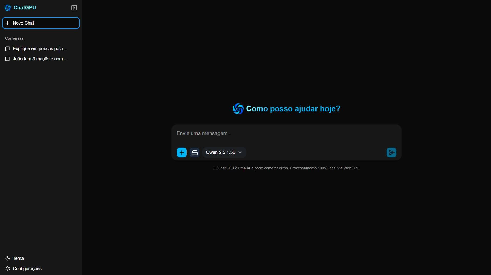
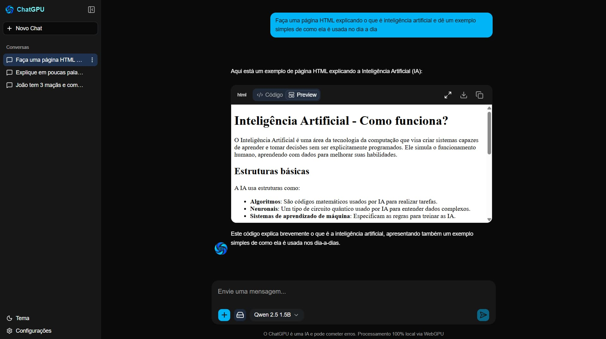
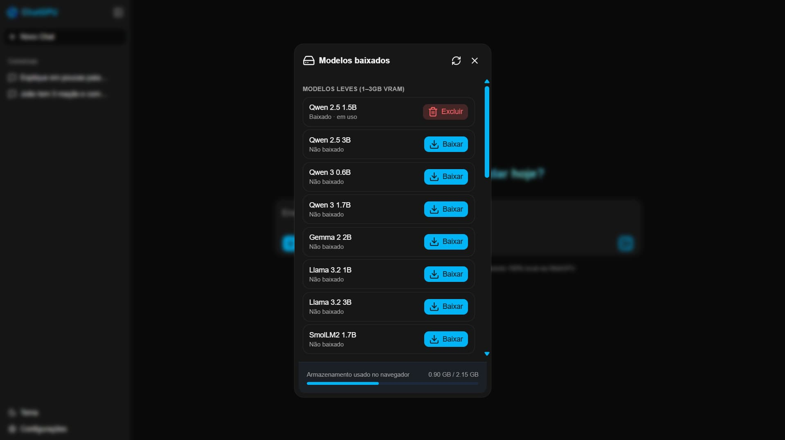
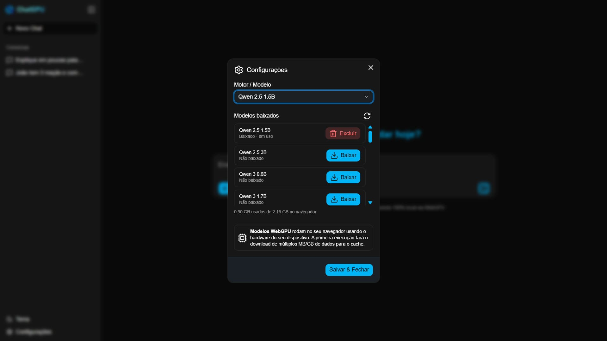

chatgpu


📑 Sumário
- Por que ChatGPU?
- Demo
- Download do app desktop
- Funcionalidades
- Capturas de tela
- Como funciona
- Modelos suportados
- Instalação
- Estrutura do projeto
- Persistência
- Contribuição
- FAQ
- Licença
🎯 Por que ChatGPU?
A maioria dos chats de IA manda cada mensagem sua para um servidor de terceiros. O ChatGPU faz o oposto: ele baixa o modelo de linguagem uma vez e roda toda a inferência dentro do seu navegador, usando WebGPU para acelerar por hardware. Nada do que você digita sai da sua máquina.
| 🤖 ChatGPU | ☁️ Chat na nuvem tradicional | |
|---|---|---|
| 🔒 Privacidade | Tudo roda localmente, nada é enviado | Mensagens trafegam por servidores externos |
| 💸 Custo | Gratuito, sem chave de API | Geralmente requer assinatura ou créditos |
| 🌐 Internet | Só é necessária para baixar o modelo | Necessária a cada mensagem enviada |
| ⚡ Processamento | Usa a GPU do seu próprio dispositivo | Depende da infraestrutura do provedor |
🚀 Demo
Experimente sem instalar nada:
👉 https://chatgpu-nu.vercel.app/
⚠️ Na primeira visita o navegador precisa baixar o modelo escolhido — isso pode levar alguns minutos, dependendo da sua conexão.
📥 Download do app desktop
Prefere um aplicativo nativo em vez do navegador? O ChatGPU também roda como app desktop (empacotado com Tauri), disponível para Windows, macOS e Linux na página de releases — versão atual: v1.0.0.
| Sistema | Arquivo | Tamanho |
|---|---|---|
| 🪟 Windows — instalador | chatgpu_1.0.0_x64-setup.exe |
9.46 MB |
| 🪟 Windows — pacote MSI | chatgpu_1.0.0_x64_en-US.msi |
10.5 MB |
| 🍎 macOS — Apple Silicon | chatgpu_1.0.0_aarch64.dmg |
12.5 MB |
| 🐧 Linux — Debian/Ubuntu (.deb) | chatgpu_1.0.0_amd64.deb |
10.5 MB |
| 🐧 Linux — Fedora/RHEL (.rpm) | chatgpu-1.0.0-1.x86_64.rpm |
10.5 MB |
| 🐧 Linux — universal (AppImage) | chatgpu_1.0.0_amd64.AppImage |
84.4 MB |
⚠️ macOS: por enquanto só há build para Apple Silicon (aarch64) — ainda não há
.dmgpara Macs Intel. Também é possível baixar o código-fonte direto (.zip/.tar.gz) e compilar você mesmo com Tauri.
🔐 Checksums SHA-256 (clique para expandir)
| Arquivo | SHA-256 |
|---|---|
chatgpu_1.0.0_x64-setup.exe |
3e15222c9323b7a4656f37218ac3546e3a21889a46b0d90c2471e95dce47aa08 |
chatgpu_1.0.0_x64_en-US.msi |
8ee06119c123ae4ec6ac7fc2dc09dee7fa51e2eb88eb565d580efa9b9691210b |
chatgpu_1.0.0_aarch64.dmg |
afaf555c2339795df88120d360db124d856ef9ed11154ec435b90ffdce98af4c |
chatgpu_aarch64.app.tar.gz |
650d4288e9b0263beca3f91f7cd9045cdc5e73a93166ada34ae887a30c3b1683 |
chatgpu_1.0.0_amd64.deb |
d19bd23748f00281ff28fd0bda8e1222a1131aca457c5fac8433ca960134e3cd |
chatgpu-1.0.0-1.x86_64.rpm |
055bf4d290ebc0e669cf048fabe1f560e20b51ec8484c29004f8fa4deb5986d2 |
chatgpu_1.0.0_amd64.AppImage |
a24841310c306b477a373c7bbf740d8ef35bd80669058318b51f1b84bcd946fe |
Use sha256sum <arquivo> (Linux/macOS) ou Get-FileHash <arquivo> -Algorithm SHA256 (PowerShell) para conferir a integridade do download.
✨ Funcionalidades
- ⚡ Execução local de LLMs direto no navegador, acelerada por WebGPU
- 🧠 Múltiplos modelos disponíveis — Qwen, Llama, Phi, Gemma e outros
- 💬 Interface moderna, no estilo ChatGPT
- 🧾 Histórico de conversas salvo automaticamente no navegador
- 🧵 Streaming em tempo real das respostas, token a token
- ⏹️ Interrupção da geração a qualquer momento
- 📝 Edição de mensagens com regeneração de resposta
- 🎨 Tema claro/escuro
- 📱 Layout responsivo, funciona em desktop e mobile
📷 Capturas de tela
| Home | Chat |
|---|---|
 |
 |
| Modelos | Configurações |
 |
 |
🧠 Como funciona
flowchart TB
A[👤 Você digita e envia uma mensagem] --> B[🖥️ Thread principal - UI React]
B -->|postMessage| C[🧵 Web Worker]
subgraph WK[🧵 Web Worker - roda em background, mantém a UI livre]
direction TB
C --> D{📦 Modelo já
está em cache?}
D -->|Não| E[⬇️ Baixa o modelo
WebLLM MLC]
D -->|Sim| F[⚡ Carrega direto do cache]
E --> F
F --> G[🧠 Engine WebLLM inicializada]
G -->|WebGPU disponível| H[🔮 Inferência 100% local]
end
H -->|streaming de tokens| I[💬 UI atualizada em tempo real]
I -.->|próxima mensagem| A
classDef userStep fill:#4f46e5,stroke:#312e81,color:#fff,stroke-width:1px
classDef workerStep fill:#0891b2,stroke:#164e63,color:#fff,stroke-width:1px
classDef gpuStep fill:#ea580c,stroke:#9a3412,color:#fff,stroke-width:1px
class A,B,I userStep
class C,D,E,F,G workerStep
class H gpuStep
O projeto utiliza o @mlc-ai/web-llm, que roda modelos de linguagem direto no navegador combinando três peças:
- Web Workers (
lib/worker.ts) — a UI (thread principal) nunca trava: ela só envia a mensagem pro worker e escuta a resposta chegar em streaming - Cache do modelo (
hooks/useModelCache.ts) — na primeira vez, o navegador baixa os pesos do modelo (pode levar alguns minutos); depois disso, o carregamento é quase instantâneo - WebGPU + WebAssembly (
hooks/useEngine.ts) — a inferência roda acelerada por GPU quando disponível, com WebAssembly cuidando do runtime
Resumindo o fluxo: mensagem → worker → (baixa ou carrega do cache) → engine WebLLM → inferência local via WebGPU → tokens voltam em streaming pra thread principal, atualizando a UI em tempo real.
O projeto utiliza o @mlc-ai/web-llm, que permite rodar modelos de linguagem diretamente no navegador combinando:
- WebGPU — acelera a inferência usando a GPU disponível
- WebAssembly — executa partes do runtime de forma otimizada
- Web Workers — mantém a UI fluida enquanto o modelo processa em segundo plano
Resumindo o fluxo: o modelo é carregado no browser → as mensagens vão para o worker → o modelo gera a resposta em streaming → a interface atualiza em tempo real.
🛠️ Stack tecnológica
| Tecnologia | Uso |
|---|---|
| Next.js (App Router) | Frontend / estrutura do app |
| React | Interface e gerenciamento de estado |
| TypeScript | Tipagem estática |
| Tailwind CSS | Estilização |
| shadcn/ui | Componentes de UI |
| WebLLM (MLC) | Execução dos modelos LLM no navegador |
| Web Workers | Processamento em background |
| Dexie.js | Persistência local (IndexedDB) |
| Tauri | Empacotamento como app desktop |
🧩 Modelos suportados
Os modelos são definidos em /constants/models.ts. Alguns exemplos disponíveis:
| Modelo | Origem | Bom para |
|---|---|---|
| Qwen2.5 | Alibaba | Bom equilíbrio entre qualidade e desempenho |
| Llama 3 | Meta | Respostas de propósito geral com boa qualidade |
| Phi-3 | Microsoft | Modelo leve, ideal para hardware mais modesto |
| Gemma | Alternativa compacta e rápida |
⚠️ Modelos maiores exigem mais RAM/VRAM e podem não rodar bem em todos os dispositivos — prefira os modelos menores em notebooks sem GPU dedicada.
📦 Instalação
Pré-requisitos:
- Node.js 18 ou superior
- Um navegador com suporte a WebGPU (Chrome, Edge ou outro navegador Chromium recente)
# Clone o repositório
git clone https://github.com/Victor-Gabriel-Barbosa/chatgpu.git
# Entre na pasta
cd chatgpu
# Instale as dependências
npm install
# Rode o projeto
npm run dev
Depois abra:
http://localhost:3000
💡 Não quer compilar nada? Baixe o app desktop pronto para o seu sistema operacional.
📁 Estrutura do projeto
chatgpu/
├── app/ # Next.js App Router
│ ├── layout.tsx # Layout raiz da aplicação
│ ├── page.tsx # Página principal
│ └── globals.css # Estilos globais
│
├── components/ # Componentes React
│ ├── chat/ # Componentes específicos do chat
│ │ ├── app-sidebar.tsx # Sidebar da aplicação
│ │ ├── chat-message.tsx # Componente de mensagem do chat
│ │ ├── code-block.tsx # Bloco de código
│ │ ├── model-manager-modal.tsx # Modal para gerenciar modelos
│ │ ├── service-worker-register.tsx # Registro do service worker
│ │ └── settings-modal.tsx # Modal de configurações
│ │
│ └── ui/ # Componentes UI genéricos (Design System)
│ ├── avatar.tsx # Avatar do usuário
│ ├── bubble.tsx # Bubble de mensagem
│ ├── button.tsx # Botão
│ ├── dialog.tsx # Diálogo
│ ├── dropdown-menu.tsx # Menu suspenso
│ ├── field.tsx # Campo de formulário
│ ├── input.tsx # Input
│ ├── label.tsx # Label
│ ├── message-scroller.tsx # Scroll de mensagens
│ ├── message.tsx # Componente de mensagem
│ ├── select.tsx # Select
│ ├── separator.tsx # Separador
│ ├── sheet.tsx # Sheet (drawer)
│ ├── sidebar.tsx # Sidebar genérica
│ ├── skeleton.tsx # Skeleton loader
│ ├── sonner.tsx # Toast notifications
│ ├── tabs.tsx # Abas
│ ├── textarea.tsx # Textarea
│ ├── theme-provider.tsx # Provider de tema
│ └── tooltip.tsx # Tooltip
│
├── hooks/ # Custom React Hooks
│ ├── use-mobile.ts # Hook para detectar mobile
│ ├── useEngine.ts # Hook para gerenciar engine WebLLM
│ ├── useModelCache.ts # Hook para cachear modelos
│ └── useSession.ts # Hook para gerenciar sessão de chat
│
├── lib/ # Utilitários e helpers
│ ├── fileToText.ts # Converter arquivo para texto
│ ├── utils.ts # Funções utilitárias genéricas
│ └── worker.ts # Web Worker
│
├── types/ # Definições de tipos TypeScript
│ ├── chat.ts # Tipos relacionados ao chat
│ └── theme.ts # Tipos de tema
│
├── config/ # Configurações
│ └── models.json # Configuração de modelos disponíveis
│
├── db/ # Banco de dados
│ └── database.ts # Setup do banco de dados
│
├── public/ # Arquivos estáticos
│ ├── apple-icon.png # Ícone Apple
│ ├── favicon.ico # Favicon
│ ├── icon0.svg # Ícone SVG
│ ├── icon1.png # Ícone PNG
│ ├── manifest.json # Manifest PWA
│ └── sw.js # Service Worker
│
├── docs/ # Documentação
├── screenshots/ # Screenshots
├── src-tauri/ # Código Tauri (versão desktop)
│
├── .gitignore
├── AGENTS.md
├── CLAUDE.md
├── README.md
├── components.json # Config do componente UI library
├── eslint.config.mjs # ESLint config
├── next.config.ts # Next.js config
├── package.json # Dependências do projeto
├── package-lock.json
├── postcss.config.mjs # PostCSS config
├── tsconfig.json # TypeScript config
└── typedoc.json # TypeDoc config
💾 Persistência
Tudo fica salvo localmente, no seu próprio navegador:
| Chave | Descrição |
|---|---|
chatgpu-sessions |
Histórico de conversas |
chatgpu-model |
Modelo selecionado |
chatgpu-theme |
Tema (claro/escuro) |
⚠️ Limitações
- Depende de suporte a WebGPU (nem todos os navegadores suportam ainda)
- Pode consumir bastante memória, dependendo do modelo
- O carregamento inicial do modelo pode demorar
- A performance varia bastante conforme o hardware do usuário
🗺️ Roadmap
- [ ] Exportar/importar conversas
- [ ] Suporte a mais modelos
- [ ] Melhor gerenciamento de memória
- [ ] Deploy otimizado (lazy loading de modelos)
- [ ] Suporte a plugins/tools
🤝 Contribuição
Pull requests são muito bem-vindos — desde ajustes de UI até suporte a novos modelos.
- Faça um fork do projeto
- Crie uma branch (
feature/minha-feature) - Commit suas mudanças
- Abra um PR
❓ FAQ
Preciso estar online para usar? Só na primeira vez, para baixar o modelo escolhido. Depois disso, o modelo fica em cache no navegador.
Minhas conversas são enviadas para algum servidor? Não. Toda a inferência acontece localmente, no seu próprio navegador.
Funciona em qualquer computador? Depende do suporte a WebGPU do navegador e do hardware disponível — dispositivos sem GPU dedicada tendem a ser mais lentos, especialmente com modelos maiores.
Posso usar no celular? Em tese sim, desde que o navegador do dispositivo suporte WebGPU, mas a experiência varia bastante.
Preciso instalar o app desktop ou dá pra usar direto no navegador? Os dois funcionam igual por baixo dos panos (mesmo motor WebLLM). O app desktop é só uma conveniência — ícone na área de trabalho, sem depender de manter uma aba aberta. Use o link do site se quiser testar sem instalar nada.
📄 Licença
Distribuído sob a licença MIT.